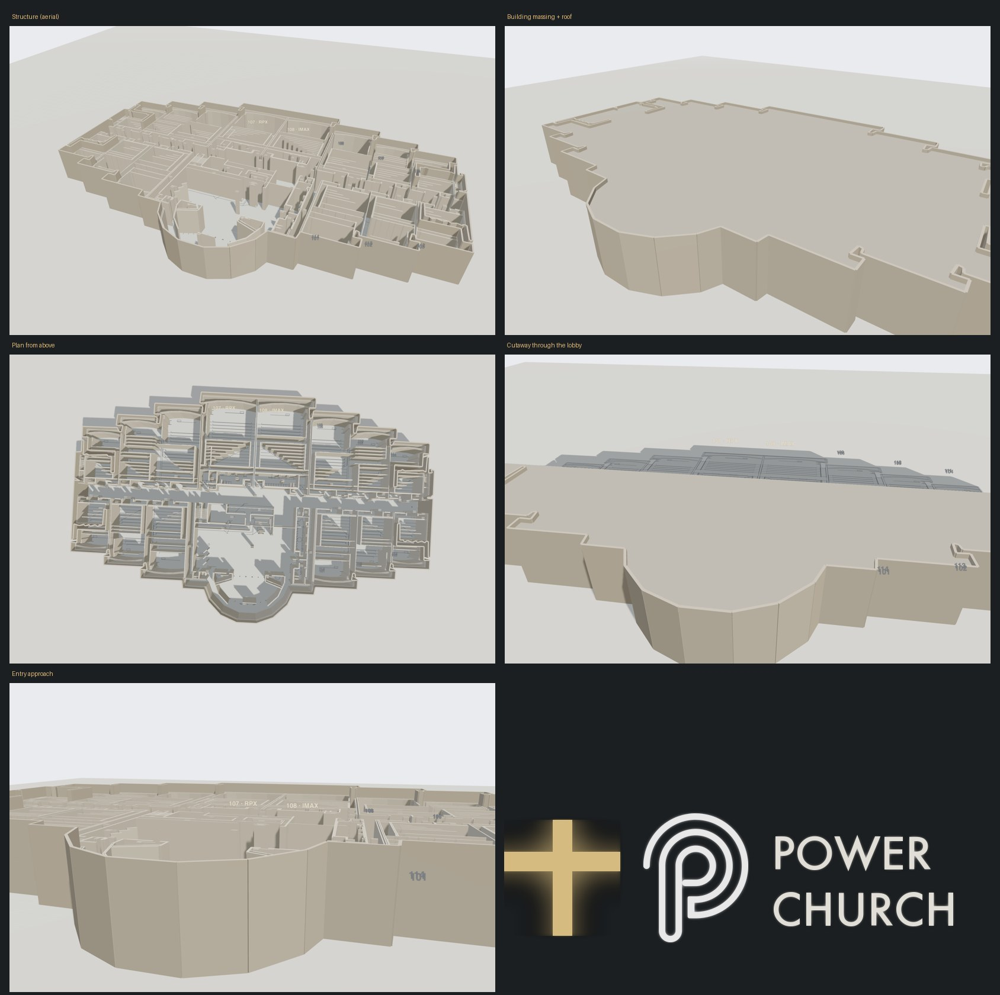
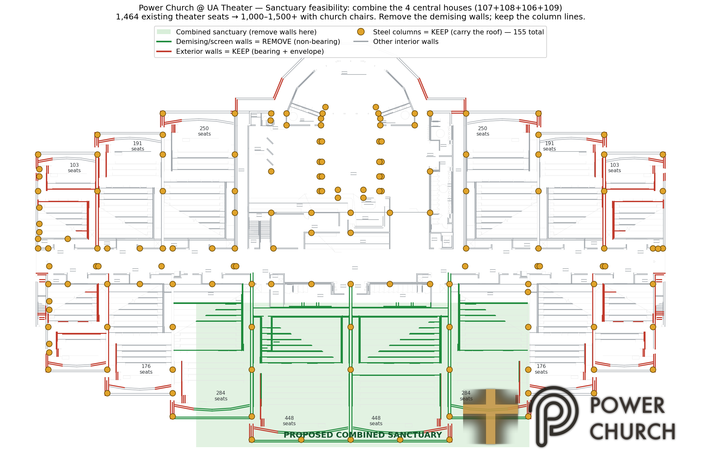
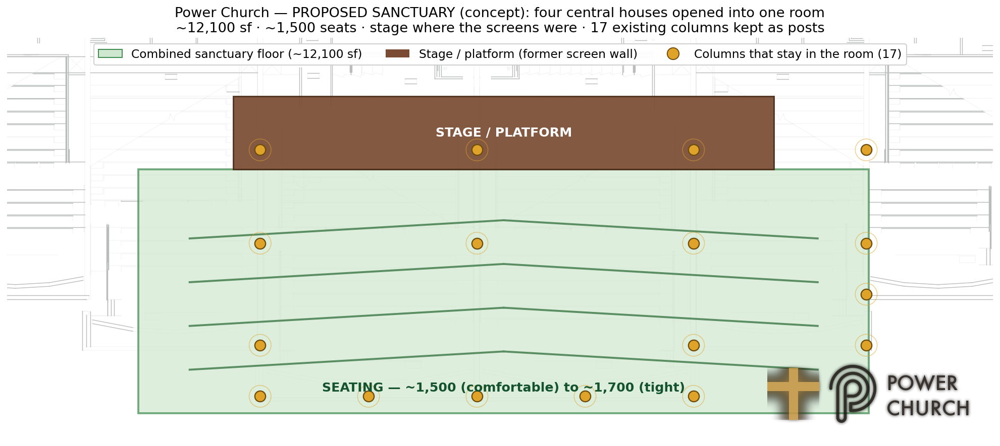

For Pastor Aaron, Pastor Shana, Pastor Manny, Johnny Ray, and anyone helping run the building. Drawings, the 3D model, HVAC and electrical status, the inspection report, and the volunteer app — all in one place. No deal pricing or contracts live here, that's kept separate.
26 rooftop units. The building panel can reach 14 of them; the other 12 only respond by hand at the unit. The panel's schedule still runs the old movie-theater hours and can't be rewritten — the software no longer exists. Electrical: the main panel is in service with a few fixable problems, but the full original wiring drawings are still missing.
Floor plans, site plan, and the original 1998 mechanical drawing set. All PDFs, open on any phone.
Spin it, look inside, slide the roof and walls. Plus the sanctuary seating study — how houses 106–109 could combine into one worship space.



Which rooftop unit serves which room, what's actually up there today vs. the original design, the building automation panel, and the live remote-control system that can turn units on and off from a phone.
14 of 26 units answer the panel. The remote-control system can set any of them to Cooling and hold a target temperature.
12 units are wired-but-dark (comms failure, not software). The panel's own schedule is frozen on old movie hours.
A licensed inspector's real findings, plus what original drawings are still missing.
| Main panel | Square D, 400A, back of building |
| Subpanels | Kitchen, Camera Rooms |
| Known issues | No GFCI anywhere, one dead lobby circuit |
| Missing | Full 1998 electrical set (one-line, panel schedules) |
A licensed inspector physically walked the building before closing. The one document here that's a real person looking at current condition, not a 1998 drawing.
The volunteer job-tracking app for actually running the remodel — jobs with photo proof, a map of the building, who to report to. A real tool, not a document.
Open Power Church Commander →{kind=link}